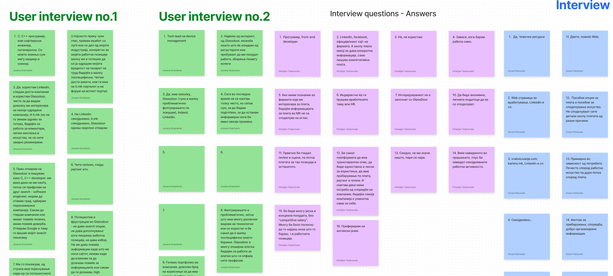

user interviews
We started with analyzing the competitors, and determining the main obstacles that we need to work around in order to make the product a success. The main problem was to be easy to use and in the same time for the user not to be overwhelmed with information. Afterwards I researched the competitors and did a detailed competitor analysis. Afterwards we created the personas, one primary and one secondary, and we conducted a survey of questions regarding the product. From the research and interviews I concluded that we need to work on a clean and easy to use design, given the fact that HR reps and Job seekers have pretty busy schedules, and need to find their required information quickly.
